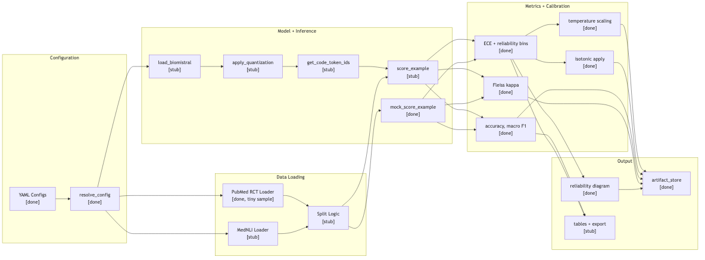

Beyond Accuracy Loss: Measuring and Recovering Calibration Degradation in a Quantized Biomedical Large Language Model
main branch (26 commits through 2026-03-24)reliability_eval (Python, under project/src/)This project investigates whether post-training quantization of BioMistral-7B degrades calibration (measured by Expected Calibration Error, ECE) more than classification accuracy (measured by macro F1), and whether standard post-hoc calibration methods can recover the lost calibration. The work targets two widely used biomedical classification benchmarks — PubMed 20k RCT (5-class sequential sentence classification) and MedNLI (3-class natural language inference, accessed via PhysioNet) — evaluated across three precision levels (FP16, INT8, INT4) using the bitsandbytes quantization backend.
Three testable hypotheses:
The core motivation is that existing evaluations of quantized biomedical LLMs focus almost exclusively on aggregate accuracy, which is insufficient for safety-critical clinical deployment. This project extends prior observations that quantization degrades calibration by testing whether post-hoc methods can recover it — and at what cost to classification accuracy and prompt stability.
The following table lists completed components with representative evidence files and their connection to the research goal.
| Component | Evidence (file : function) | Research-Goal Link |
|---|---|---|
| Project scaffold and documentation | docs/proposal.md, architecture.md, experiment_protocol.md, CONSISTENCY_MATRIX.md, INVENTORY.md |
Reproducible experimental design; audit trail for documentation-code consistency |
| Hierarchical YAML config system | src/reliability_eval/config/resolve.py : resolve_config, resolve_mvp_config |
Enables the 30–60 run sweep matrix without manual config editing |
| CLI and 3 experiment runners | src/reliability_eval/cli.py : _cmd_run, _cmd_sweep; experiments/run_mvp.py, run_local.py, run_grid.py |
Multiple execution paths (local, grid, Flyte) for different compute environments |
| Artifact I/O | src/reliability_eval/io/artifact_store.py : ensure_run_dir, save_predictions, save_metrics; io/run_manifest.py : create_manifest |
Structured provenance for every experiment run |
| Classification metrics | src/reliability_eval/metrics/classification.py : compute_metrics |
Macro F1 is the denominator in Hypothesis 1 (Δ_F1) |
| ECE and reliability diagrams | src/reliability_eval/metrics/calibration.py : expected_calibration_error, reliability_bins; reporting/reliability_diagrams.py : plot_reliability |
ECE is the primary metric for Hypothesis 1; reliability diagrams are the primary visualization |
| Prompt rendering and label-code mappings | src/reliability_eval/prompting/render.py : render; prompting/label_codes.py : get_label_codes |
Single-letter class codes are the intended probability extraction method (proposal Section 5.2); single-token mapping must be verified with the BioMistral tokenizer |
| Mock inference pipeline | src/reliability_eval/inference/score_class_codes.py : mock_score_example |
Validates the pipeline end-to-end without GPU; reduces integration risk for real inference |
| PubMed RCT data loader | src/reliability_eval/data/pubmed_rct.py : load_pubmed_rct |
Data adapter for the primary benchmark task |
| Fleiss' kappa (prompt stability) | src/reliability_eval/metrics/prompt_stability.py : fleiss_kappa (fully implemented with edge-case handling) |
Core metric for Hypothesis 3 (prompt robustness under quantization) |
| Temperature scaling (apply + fit) | src/reliability_eval/calibration/temperature_scaling.py : apply_temperature_scaling, fit_temperature (64-point geometric grid search) |
The intervention tested in Hypothesis 2 (calibration recovery) |
| Isotonic calibration (apply) | src/reliability_eval/calibration/isotonic.py : isotonic_calibration, _apply_monotone_then_renorm |
Alternative calibration method for the recovery analysis |
| Calibration dispatch | src/reliability_eval/calibration/apply.py : apply_calibration |
Routes to temperature/isotonic/none based on config |
| Sweep grid expansion | src/reliability_eval/experiments/run_grid.py : expand_sweep |
Generates the Cartesian product of precision × dataset × template × calibration |
| Flyte orchestration wrappers | src/reliability_eval/flyte/tasks.py, flyte/workflows.py |
Optional reproducible workflow orchestration |
| Test suite (10 modules, 38 tests) | tests/test_mvp_runner.py, test_config_resolution.py, test_calibration_apply.py, test_calibration_metrics.py, test_probability_extraction.py, test_prompt_rendering.py, test_prompt_stability.py, test_dataset_registry.py, test_label_code_tokenization.py, test_artifact_store.py |
Validates correctness of metrics, config resolution, calibration, and pipeline integration |
The mock inference pipeline validates the full data flow end-to-end: config resolution → data loading → prompt rendering → scoring → metrics computation → artifact writing → reliability diagram generation. Once real model inference is connected, the experimental sweep should run through the existing infrastructure without major additional plumbing.
Progress since the March 24 update: The prior update document (project_update.md) lists Fleiss' kappa, temperature scaling, and isotonic calibration as "not started." All three are now implemented and tested. This Milestone 2 document reflects the actual code state as of April 6, 2026.
By Milestone 2, the experiment infrastructure is largely ready, but no real model results have been produced yet because model loading and GPU-backed inference remain the main blocking dependency. The project is currently more developed as an evaluation scaffold than as an experimental study — the measurement infrastructure is in place, but it has not yet been exercised on real model outputs. The table below summarizes where each research phase stands:
| Research Phase | Status | Detail |
|---|---|---|
| Infrastructure (config, CLI, metrics, calibration, artifact I/O, tests) | Complete | 16 components implemented and tested; end-to-end pipeline validated with mock inference |
| Experiments (real model loading, inference, full dataset, prompt sweep) | Not started | Blocked on BioMistral-7B loading + GPU access; remaining stubs depend on the same model-loading implementation |
| Analysis (hypothesis testing, bootstrap CIs, reporting, final paper) | Not started | Depends on experiment outputs; analysis code (ECE, Fleiss' kappa, temperature scaling) is ready |
| Component | What Exists | What Is Missing |
|---|---|---|
| PubMed data adapter | Tiny 8-example JSONL sample (data/samples/pubmed_rct_tiny.jsonl) + loader |
Full HuggingFace dataset integration; real train/val/calib/test splits |
| Dataset splits | src/reliability_eval/data/splits.py : get_splits returns hardcoded list ["train", "val", "calibration", "test"] |
Actual split logic that partitions loaded data into those splits |
| Prompt templates | 2 PubMed templates (pubmed_t1, pubmed_t2) |
3 more PubMed + 5 MedNLI templates (proposal requires 5 per task) |
| Isotonic calibration | Apply + renormalize implemented | fit_isotonic raises NotImplementedError |
| CLI | run and sweep subcommands work |
report subcommand prints "not yet implemented" |
Real inference integration: The following stubs all depend on BioMistral-7B model loading. Rather than independent gaps, they form a single blocking dependency:
src/reliability_eval/models/load_model.py, models/quantization.py, models/tokenizer_utils.pysrc/reliability_eval/inference/score_class_codes.py : score_examplesrc/reliability_eval/inference/batch_runner.py : run_evalDownstream items (depend on real inference):
src/reliability_eval/data/mednli.py — contingent on PhysioNet access; proposal fallback is PubMed-only)src/reliability_eval/experiments/aggregate.py)src/reliability_eval/reporting/tables.py, reporting/export_summary.py)src/reliability_eval/metrics/efficiency.py)The following artifacts were generated on April 6, 2026 by running the MVP pipeline (experiments/run_mvp.py) with mock inference on the 8-example PubMed RCT tiny sample. They demonstrate that the pipeline functions correctly end-to-end. These are synthetic outputs from the deterministic mock scorer and do not represent real model performance.
Generated from mock inference on 8-example PubMed RCT sample. Demonstrates that ECE computation, binning, and plot generation function correctly end-to-end.
{
"accuracy": 0.375,
"macro_f1": 0.26,
"per_class_f1": {
"BACKGROUND": 0.0,
"CONCLUSIONS": 0.5,
"METHODS": 0.0,
"OBJECTIVE": 0.0,
"RESULTS": 0.8
},
"n_examples": 8,
"ece": 0.13724415660881062
}
Metrics output from mock inference. Values are synthetic (mock scorer artificially inflates confidence for the correct label by +0.35) and do not represent model performance.
======================== 37 passed, 1 xfailed in 19.10s ========================
All 37 tests pass across 10 test modules covering config resolution, metrics computation, calibration, prompt rendering, probability extraction, artifact I/O, and end-to-end pipeline integration. The single xfail is a placeholder test (test_tokenization_single_token) that verifies single-letter class codes map to exactly one token ID in the real BioMistral tokenizer — it cannot pass until the actual model tokenizer is loaded, which is expected.
The entire experimental pipeline — from FP16 baselines through quantization experiments and calibration recovery — is blocked on a single dependency: implementing real model loading and single-token logit extraction in the models/ and inference/ subpackages.
Three functions must be implemented:
src/reliability_eval/models/load_model.py : load_biomistral — load BioMistral-7B at FP16, INT8, and INT4 precision levelssrc/reliability_eval/models/tokenizer_utils.py : get_code_token_ids — map class-code letters (A–E) to their token IDssrc/reliability_eval/inference/score_class_codes.py : score_example — extract logits at the first generated token position, select code-token logits, compute restricted softmaxEvery module downstream — calibration recovery, prompt stability across real templates, bootstrap CIs, reporting — depends on having real probability distributions. The mock inference pipeline has validated the plumbing, but produces synthetic distributions that cannot test the research hypotheses.
This is not simply "code that hasn't been written yet." Four specific technical risks make the implementation uncertain:
Tokenizer behavior. The project assumes that single-letter codes (A, B, C, D, E) each map to exactly one token ID, but this must be verified empirically for the BioMistral tokenizer before experiments proceed. BioMistral extends the base Mistral tokenizer with biomedical vocabulary; there is a risk that the tokenizer treats " A" (with leading space) differently from "A", or that the extended vocabulary introduces unexpected token splits. The test_label_code_tokenization.py test has an xfail placeholder for exactly this verification, which cannot pass until the real tokenizer is loaded.
Logit extraction position. For a decoder-only model with a prompt followed by a completion cue, the logits at the correct token position must be extracted. Off-by-one errors in the position index would silently produce nonsense probability distributions. The mock scorer sidesteps this entirely by generating probabilities directly; the real implementation must correctly identify the first generated token position after the prompt.
Quantization configuration. bitsandbytes INT4 (NF4) with double quantization requires specific BitsAndBytesConfig parameters. Incorrect configuration can silently fall back to FP16, producing misleading results that appear to show "no quantization effect." The quantization module must verify the model is actually loaded at the intended precision by checking weight dtypes or memory footprint.
Hardware dependency. As a rough weights-only estimate, a 7B model requires about 14 GB at FP16 and about 3.5 GB at 4-bit precision, though actual inference memory depends on KV cache, activations, and framework overhead. The project needs access to a GPU with at least 16 GB VRAM. The current compute options are ODU HPC nodes or a cloud GPU (Colab Pro, Lambda, etc.), neither of which is configured yet.
The PubMed loader currently uses an 8-example fixture (data/samples/pubmed_rct_tiny.jsonl). Real experiments need the full 20k-abstract PubMed RCT dataset loaded from HuggingFace, with proper train/val/calibration/test split logic implemented in src/reliability_eval/data/splits.py (currently a stub returning hardcoded split names).
The proposal's Phase 3 (quantization experiments) was scheduled to end April 6 — today. The project is approximately three weeks behind the original timeline. This delay reflects a deliberate trade-off: the scaffold phase was more extensive than initially planned — building a full config composition system, CLI tooling, Flyte wrappers, a 10-module test suite, and a documentation audit trail. I prioritized infrastructure and testing early, which should reduce integration risk when real inference is connected, but it means the first real model run has not happened yet. In retrospect, the time spent on reproducibility infrastructure was probably worthwhile, but it did push back the start of actual experiments further than I expected.
Three steps bridge the gap between the current state (validated mock pipeline) and the research goal (tested hypotheses with real model outputs), aligned to remaining deadlines.
Target: April 13 (before Milestone 3)
load_model.py : load_biomistral for FP16, INT8, INT4 using transformers + bitsandbytestokenizer_utils.py : get_code_token_ids to map class-code letters to token IDsscore_class_codes.py : score_example for single-token logit extraction + restricted softmaxtorch, transformers, bitsandbytes, accelerate to requirements.txt (currently listed as TODO)Target: April 20 (Milestone 3 delivery)
datasets library; implement real train/val/calib/test splits in data/splits.pydata/mednli.py loader and 5 MedNLI templates; otherwise invoke the proposal fallback (PubMed-only)fit_isotonic in calibration/isotonic.pyTarget: May 1 (3 days before final submission)
run_grid.pyaggregate_metrics for cross-run synthesisI am not fully confident that GPU access and model loading can be resolved within one week, so the fallback plan below is a realistic contingency rather than a formality.
Decision rule: If FP16 real inference is not working by April 13, the project will formally narrow to PubMed-only and INT8-first execution. Specifically:
The following diagram shows the end-to-end pipeline. Nodes marked with [done] are implemented and tested; nodes marked with [stub] are not yet implemented.

The main dependency chain runs through LoadModel → Quantize → Tokenizer → Score. Once this chain is implemented, all downstream metrics and output nodes already function correctly (validated via the MockScore path).
I would appreciate feedback on the following architectural and methodological decisions:
Probability extraction validity. My approach extracts class probabilities by taking the softmax over only the logits of 5 (or 3) single-letter code tokens, discarding the rest of the vocabulary. Could this restricted softmax introduce systematic bias in the probability estimates compared to the full-vocabulary distribution, and if so, how would you control for that?
Calibration measurement under distribution shift. Temperature scaling is fitted on a held-out calibration split (15% of validation data) and evaluated on the test set. Given that quantization may shift the model's internal representations, is it valid to fit the calibration method on quantized-model outputs and evaluate on the same quantized model — or should the calibration set also be used to measure the shift relative to FP16 as a reference?
Prompt stability as an independent failure mode. The tertiary hypothesis claims that prompt instability under quantization is independent of calibration degradation. What additional evidence — beyond showing that temperature scaling does not recover Fleiss' kappa — would you need to convincingly argue these are genuinely separate failure modes rather than correlated symptoms of the same underlying representational damage?